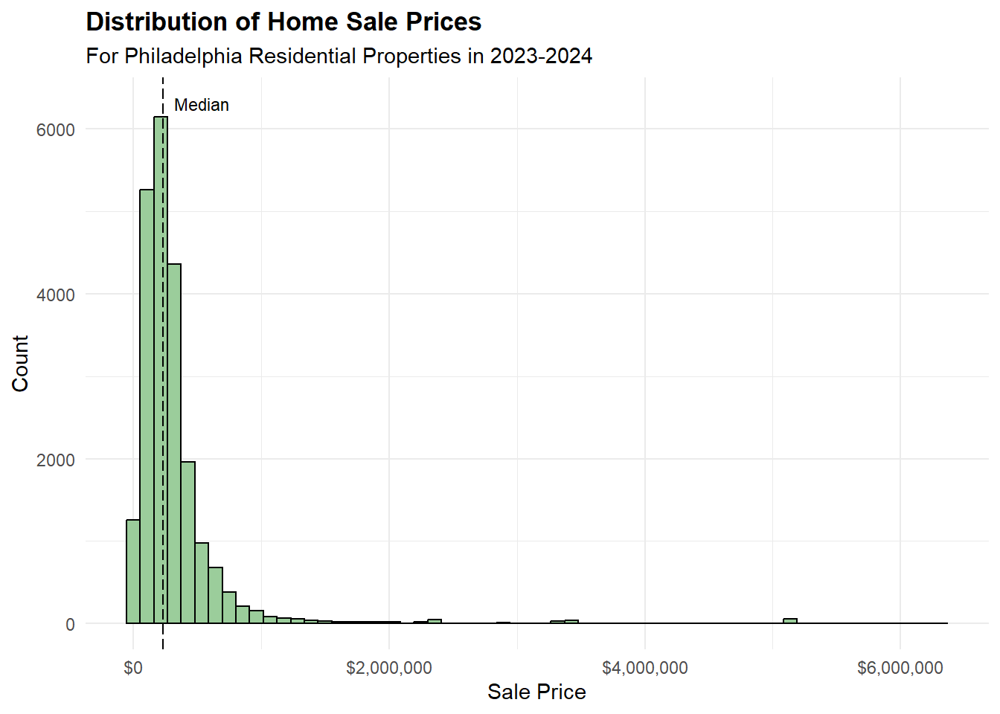

── Attaching core tidyverse packages ──────────────────────── tidyverse 2.0.0 ──
✔ dplyr 1.1.4 ✔ readr 2.1.5
✔ forcats 1.0.0 ✔ stringr 1.5.2
✔ ggplot2 4.0.0 ✔ tibble 3.3.0
✔ lubridate 1.9.4 ✔ tidyr 1.3.1
✔ purrr 1.1.0
── Conflicts ────────────────────────────────────────── tidyverse_conflicts() ──
✖ dplyr::filter() masks stats::filter()
✖ dplyr::lag() masks stats::lag()
ℹ Use the conflicted package (<http://conflicted.r-lib.org/>) to force all conflicts to become errors
Attaching package: 'scales'
The following object is masked from 'package:purrr':
discard
The following object is masked from 'package:readr':
col_factor
Linking to GEOS 3.13.1, GDAL 3.11.0, PROJ 9.6.0; sf_use_s2() is TRUE
To enable caching of data, set `options(tigris_use_cache = TRUE)`
in your R script or .Rprofile.
here() starts at C:/Users/jcahi/OneDrive/Desktop/MUSA 5080/Midterm/MUSA5080-MidtermTechnical Appendix
PHASE 1: DATA PREPARATION
1.1 Load and Philadelphia house sales data
# Load Philly Property Sales data
phl_sales <- read_csv("../data/raw/opa_properties_public.csv", show_col_types = FALSE)Warning: One or more parsing issues, call `problems()` on your data frame for details,
e.g.:
dat <- vroom(...)
problems(dat)Filter to residential properties, 2023-2024 sales
# Check data types
# glimpse(phl_sales)
phl_sales_res_23_24 <- phl_sales |>
filter(
category_code == 1, # Residential
year(sale_date) %in% c(2023, 2024), # 2023-24 sales
!is.na(category_code) & !is.na(sale_date) # Handle nulls
)Remove obvious errors
phl_sales_clean <- phl_sales_res_23_24 |>
filter(
# Some sale_price are unrealistically too low ($0, $1 etc.)
sale_price >= 10000,
# Exclude homes with 0 bathrooms
number_of_bathrooms > 0,
# Some areas are unrealistically low (0, 1, etc.)
total_area > 1,
# Some 0's remain in total_liveable_area after first area filter
total_livable_area > 0,
# Filter our unrealistic year built
year_built >= 1750
) Handle missing values
# Check how many features have NA values
# sum(is.na(phl_sales_clean$number_of_bedrooms))
# sum(is.na(phl_sales_clean$number_of_bathrooms))
# sum(is.na(phl_sales_clean$total_livable_area))
# sum(is.na(phl_sales_clean$year_built))
# Remove the 2 observations with NA values for number of bedrooms
phl_sales_clean <- phl_sales_clean |>
filter(
!is.na(number_of_bedrooms)
)Preliminary Feature Engineering: Age = sale date - year built
phl_sales_clean <- phl_sales_clean |>
mutate(
sale_year = year(sale_date),
age = sale_year - year_built
)Document all cleaning decisions
Our methodology for cleaning the Philadelphia home sales data is to focus on the features used in our model. As a group, we decided on the following independent variables to consider in our data exploration and model building to be: number of bathrooms, number of bedrooms, total livable area, and year built. We recognize that there is some risk of collinearity between these structural features, which will later be monitored and addressed if needed in the model building stage. Additionally, we also had to clean the sales price column since this is the variable we aim to predict in our model.
Filter for only residential properties & sales made in 2023-24 (per instructions).
Filter for realistic sales price >= $10,000.
Filter for houses with at least 1 bathroom. We will keep observations where number of bedrooms = 0 as this likely signifies a studio apartment. However, it is not feasible for homes to have zero bathrooms, so we will enforce a constraint that a home must have at least 1 bathroom to preserve data integrity.
Filter for realistic total area > 1 sq ft & realistic total livable area > 0 sq ft.
Filter for year built >= 1750 (some homes were built in year 0).
Handle missing values: We removed any missing values in our dependent variable of sales price, since it is crucial we have a true and accurate measure for prediction. We also checked which of our predictor variables had NA values after filtering. Only number of bedrooms had 2 remaining NA values. The rest had no NA values. To remedy this, we will remove the 2 observations from our data. Note, if there was substantial missing values in our predictors, we could use strategies such as imputing the NA values with the mean or median to use when building our model.
Preliminary feature engineering: Rather than using year built in our Automated Valuation Model, it makes more sense to create a new variable age that is equal to the sale date minus the year built. The age variable is often easier to interpret in exploratory plots with the newer houses appearing on the left and older ones on the right. This is primarily a stylistic preference: the overall pattern of the data will remain the same but mirrored.
1.2 Load Secondary Data
Census
Purpose: Pull demographic and housing data at the block group level for Philadelphia from the 2023 5-year ACS. This data will provide predictors for neighborhood characteristics in our modeling.
Variables Collected:
Median household income (B19013)
Percentage of family households (B11001)
Education attainment: percent of population 25+ with a bachelor’s degree or higher (B15003)
Housing vacancy rate (B25002)
Racial composition: percent white (B02001)
Load Philly Census Data from Previously Retrieved Files
# Relative to project root
census_path <- here("data", "Philly Census")
census_csv_path <- file.path(census_path, "philly_blockgroups_metrics.csv")
census_shp_path <- file.path(census_path, "philly_blockgroups.shp")
# Csv with Block Group Geo IDs and metrics
philly_blockgroup <- read_csv(census_csv_path, show_col_types = FALSE)
# Shp File including geometry
philly_bg_sf <- st_read(census_shp_path, quiet = TRUE)Observe Summary Statistics from target metrics.
numeric_vars <- c("median_income", "pct_white", "pct_bachelors", "pct_vacant")
philly_blockgroup %>%
select(all_of(numeric_vars)) %>%
summary() median_income pct_white pct_bachelors pct_vacant
Min. : 2499 Min. : 0.000 Min. : 0.00 Min. : 0.000
1st Qu.: 43598 1st Qu.: 5.352 1st Qu.: 12.65 1st Qu.: 1.206
Median : 63401 Median : 27.616 Median : 27.49 Median : 8.122
Mean : 71011 Mean : 35.758 Mean : 34.14 Mean : 9.997
3rd Qu.: 92716 3rd Qu.: 63.196 3rd Qu.: 50.13 3rd Qu.: 15.103
Max. :250001 Max. :100.000 Max. :100.00 Max. :100.000
NA's :318 NA's :64 NA's :64 NA's :72 A quick check of the census variables reveals some missing values and lower than epected values in median income. We will note this information but retain the missing values for now to maintain the full pitcure of census blocks.
Cleaning Methodology (Census)
Median income: Selected only the estimate column and renamed it for clarity.
Household composition: Pivoted ACS table to wide format, then calculated total households and family households.
Education: Pivoted to wide format, summed relevant categories to compute percent of population with a bachelor’s degree or higher.
Vacancy: Pivoted to wide format, calculated percent of homes vacant (vacant_units / total_units * 100).
Racial composition: Pivoted to wide format, computed percent white.
Merging: Combined all datasets by GEOID to create a single dataframe philly_blockgroup with all variables.
Geometry: Pulled block group shapefiles with ACS geometry and merged with philly_blockgroup to create philly_bg_map.
Neighborhood (Polygon)
Reading in Philadelphia Neighborhoods as a shp object. This will allow us to aggregate data on neighborhoods to identify catagorical metrics.
neighborhood_folder <- here("data", "philadelphia-neighborhoods")
neighborhood_path <- file.path(neighborhood_folder, "philadelphia-neighborhoods.shp")
# Read the shapefile
philly_neighborhoods <- st_read(neighborhood_path, quiet = TRUE)
head(philly_neighborhoods)Simple feature collection with 6 features and 5 fields
Geometry type: POLYGON
Dimension: XY
Bounding box: xmin: -75.23049 ymin: 39.98491 xmax: -75.0156 ymax: 40.11269
Geodetic CRS: WGS 84
NAME LISTNAME MAPNAME Shape_Leng Shape_Area
1 BRIDESBURG Bridesburg Bridesburg 27814.55 44586264
2 BUSTLETON Bustleton Bustleton 48868.46 114050424
3 CEDARBROOK Cedarbrook Cedarbrook 20021.42 24871745
4 CHESTNUT_HILL Chestnut Hill Chestnut Hill 56394.30 79664975
5 EAST_FALLS East Falls East Falls 27400.78 40576888
6 MOUNT_AIRY_EAST Mount Airy, East East Mount Airy 28845.55 43152470
geometry
1 POLYGON ((-75.06773 40.0054...
2 POLYGON ((-75.0156 40.09487...
3 POLYGON ((-75.18848 40.0727...
4 POLYGON ((-75.21221 40.0860...
5 POLYGON ((-75.18476 40.0282...
6 POLYGON ((-75.18087 40.0432...City Centers (Amenities)
Education
We used two datasets from OpenDataPhilly.com to identify schools geolocation and populated the metrics off Attendance percent and Withdrawal volumes from those schools.
# Relative to project root
education_path <- here("data", "Education")
education_csv_path <- file.path(education_path, "philadelphia_schools.csv")
education_shp_path <- file.path(education_path, "Schools Shape", "Schools.shp")
# Csv with School Names and metrics
philly_schools <- read_csv(education_csv_path, show_col_types = FALSE)
# Shp File including geometry
philly_schools_sf <- st_read(education_shp_path, quiet = TRUE)We joined the csv file containing the metrics with the shp file containing geoloaction.
# Joining Schools csv metrics to shp file. Joined on 'location_i' (shp) and 'School_code (csv)
# Keeping metrics for Attendance and Withdrawals
# Select relevant metrics from CSV
school_metrics <- philly_schools %>%
select(School_code, Attendance, Withdrawals) %>%
mutate(School_code = as.character(School_code))
philly_schools_sf <- philly_schools_sf %>%
left_join(school_metrics,
by = c("location_i" = "School_code"))philly_schools_sf_clean <- philly_schools_sf %>%
filter(!is.na(Attendance) & !is.na(Withdrawals))names(philly_schools_sf_clean) [1] "aun" "school_num" "location_i" "school_nam" "school_n_1"
[6] "street_add" "zip_code" "phone_numb" "grade_leve" "grade_org"
[11] "enrollment" "type" "type_speci" "objectid" "Attendance"
[16] "Withdrawals" "geometry" nrow(philly_schools_sf_clean)[1] 204Once joined, we dropped rows that did not have values in Attendance and Withdrawal. This resulted in 204 public schools and their metrics located in Philadelphia City Limits.
Joining data together
PHASE 2: EXPLORATORY DATA ANALYSIS
Distribution of sale prices (histogram)
# Calculate the median / mean to plot
price_median <- median(phl_sales_clean$sale_price, na.rm = TRUE)
ggplot(phl_sales_clean, aes(sale_price)) +
geom_histogram(bins = 60, fill = "darkseagreen3", color = "black") +
geom_vline(xintercept = price_median, linetype = 5) +
annotate("text",
x = price_median,
y = 6300,
label = "Median",
hjust = -0.2,
color = "black",
size = 3) +
scale_x_continuous(labels = label_dollar()) +
labs(title = "Distribution of Home Sale Prices",
subtitle = "For Philadelphia Residential Properties in 2023-2024",
x = "Sale Price",
y = "Count") +
theme_minimal() +
theme(
plot.title = element_text(face = "bold")
)
Interpretation: The histogram plot above shows the full distribution of home sale prices for residential properties in 2023-2024 from our cleaned dataset. The data is extremely right-skewed, highlighting a majority of prices under $500,000 with a long tail of more expensive homes thereafter. The main issue with the extreme outliers of home prices exceeding $5 million that make the visibility of this plot hard to interpret. Also, there are major gaps at higher sales prices as we see the data become more spread out, further indicating the presence of outliers. Therefore, to remedy this, we will plot a second histogram of the price distribution, excluding the top 5% of sales prices from the original cleaned dataset.
# Create new df, filtering out the top 5% of house prices (outliers)
price_95_perc <- quantile(phl_sales_clean$sale_price, 0.95, na.rm = TRUE)
df_95_exclude <- filter(phl_sales_clean, sale_price <= price_95_perc)
# Calculate the median / mean to plot from trimmed distribution
price_median_95_exc <- median(df_95_exclude$sale_price, na.rm = TRUE)
price_mean_95_exc <- mean(df_95_exclude$sale_price, na.rm = TRUE)
ggplot(df_95_exclude, aes(sale_price)) +
geom_histogram(bins = 20, fill = "darkseagreen3", color = "black") +
geom_vline(xintercept = price_mean_95_exc, linetype = 5) +
geom_vline(xintercept = price_median_95_exc, linetype = 5) +
annotate("text",
x = price_mean_95_exc,
y = 2400,
label = "Mean",
hjust = - 0.1,
color = "black",
size = 3) +
annotate("text",
x = price_median_95_exc,
y = 2450,
label = "Median",
hjust = 1.25,
color = "black",
size = 3) +
scale_x_continuous(labels = label_dollar()) +
labs(
title = "Distribution of Home Sale Prices",
subtitle = "For Philadelphia Residential Properties in 2023-2024",
caption = "Histogram and median/mean statistics were computed on filtered sample (sale price ≤ 95th percentile) for better visibility.",
x = "Sale Price",
y = "Count") +
theme_minimal() +
theme(
plot.title = element_text(face = "bold")
) 
Interpretation: In this revised histogram, we get a much better sense of how the sales prices are distributed without the presence of extreme outliers. As we saw before, the data is definitely right-skewed since the median ($235,250) is less than the mean ($322,231) even when removing large outliers from the top 5% of the distribution. We can visualize that the standard housing market in Philadelphia from 2023-2024 ranges between $0 and $800,000. The distribution has a single peak around $200,000, indicating that it is unimodal with a typical (or most common) home sale price in the realm of $150,000 to $250,000. This is an indication that it may be best to omit these significant outliers from our dataset when building our model for home sale price prediction. The homes on the higher end of the sale price distribution are determined by a combination of structural features (such total livable area) and spatial features (such as nearby city centers) that drive up the prices of these homes. The goal of this study is to determine what features, both structural and spatial, are significant in predicting home sale prices in Philadelphia and create an accurate model to help policy makers in valuating property tax assessments.
Geographic distribution (map)
Interpretation:
Price vs. structural features
1. Number of Bathrooms
ggplot(phl_sales_clean, aes(x = factor(number_of_bathrooms), y = sale_price)) +
geom_boxplot(fill = "lightcyan2", outlier.color = "firebrick", outlier.alpha = 0.2) +
scale_y_continuous(labels = scales::label_dollar()) +
labs(title = "Distribution of Home Sale Prices by Number of Bathrooms",
subtitle = "For Philadelphia Residential Properties in 2023-2024",
x = "Bathrooms",
y = "Sale Price") +
theme_minimal() +
theme(
plot.title = element_text(face = "bold")
)
Interpretation: Since number of bathrooms is a discrete variable, a scatter plot is not suitable to visualize this predictor’s relationship with the target variable of sale price; therefore, we opted to use box plots instead. In this first plot, we see a distinct positive relationship between number of bathrooms and home sale price. Intuitively, this makes sense since homes with more bathrooms should on average sell at higher prices. Another trend is that there are more outliers in homes with less bathrooms (between 1 and 3). These outliers are likely due to external spatial factors such as neighborhoods. Housing prices tend to surge in highly desirable neighborhoods such as Rittenhouse Square, which explains the presence of many outliers plotted above the upper bound of these boxplots. Another trend is that variance of sale prices begins to significantly widen for homes with more than 3 bedrooms. This suggests that larger homes with more bathrooms experience more price dispersion relative to those with less bathrooms. Lastly, it is worth noting that there are very few observations of homes with 8 or 12 bathrooms, indicating that it would be beneficial to remove them from our dataset to better capture the true relationship between price and number of bathrooms.
ggplot(phl_sales_clean, aes(x = factor(number_of_bathrooms), y = log(sale_price))) +
geom_boxplot(fill = "lightcyan2", outlier.color = "firebrick", outlier.alpha = 0.2) +
scale_y_continuous(labels = scales::label_dollar()) +
labs(title = "Distribution of Log(Home Sale Prices) by Number of Bathrooms",
subtitle = "For Philadelphia Residential Properties in 2023-2024",
x = "Bathrooms",
y = "Log(Sale Price)") +
theme_minimal() +
theme(
plot.title = element_text(face = "bold")
)
Interpretation: In addition, we also plotted with the y-axis transformed to the log of sales price. We notice that there is still a positive relationship that appears more linear than the first plot. The log transformation helps reduce the effect of extreme outliers by compressing the distribution of house sale prices. This transformation also serves to center the distributions as noted by the presence of both positive and negative outliers. These benefits suggest that log-transforming our target variable for a linear regression is the best suitable method to yield an accurate model.
2. Number of Bedrooms
ggplot(phl_sales_clean, aes(x = factor(number_of_bedrooms), y = sale_price)) +
geom_boxplot(fill = "lightcyan2", outlier.color = "firebrick", outlier.alpha = 0.2) +
scale_y_continuous(labels = scales::label_dollar()) +
labs(title = "Distribution of Home Sale Prices by Number of Bedrooms",
subtitle = "For Philadelphia Residential Properties in 2023-2024",
x = "Bedrooms",
y = "Sale Price") +
theme_minimal() +
theme(
plot.title = element_text(face = "bold")
)
Interpretation: The above plot to measure the relationship between home sale price and number of bedrooms is positive, indicating that homes with more bedrooms tend to sell at higher prices. However, this relationship looks significantly less strong than the relationship between sale price and number of bathrooms. We observe many outliers across homes with various bedroom sizes, most notably those with 2 - 5 bedrooms. The intuition is that these size households are more likely to be sold on the market with higher variability in sales prices, particularly in the upper tail, demonstrating right-skew. These high outliers represent luxury properties that sell for abnormally high sale prices due to other external variables like neighborhood, size etc. Again, we have a small number of very large homes with 10, 11, and 12 bedrooms that are candidates for removal before building our model.
ggplot(phl_sales_clean, aes(x = factor(number_of_bedrooms), y = log(sale_price))) +
geom_boxplot(fill = "lightcyan2", outlier.color = "firebrick", outlier.alpha = 0.2) +
scale_y_continuous(labels = scales::label_dollar()) +
labs(title = "Distribution of Log(Home Sale Prices) by Number of Bedrooms",
subtitle = "For Philadelphia Residential Properties in 2023-2024",
x = "Bedrooms",
y = "Log(Sale Price)") +
theme_minimal() +
theme(
plot.title = element_text(face = "bold")
)
Interpretation: As before, we can log-transform the target variable log(sale price) to better visualize the relationship with number of bedrooms. We still see a positive relationship that appears more linear than in our earlier plot. As before, the log-transformation stabilizes the variance to mitigate outliers and centers the data demonstrated by outliers at both the upper and lower tails. The strength of the relationship still appears to be not as obvious as with the number of bathrooms. In other words, number of bathrooms may be a more suitable predictor of sale price from these EDA observations. To avoid the risk of multicollinearity, we will keep this finding in mind when determining what structural features should be included in our final model.
3. Total Livable Area
ggplot(phl_sales_clean, aes(x = total_livable_area, sale_price)) +
geom_point(alpha = 0.1, size = 1) +
geom_smooth(method = "lm", se = FALSE, linetype = 5, color = "firebrick") +
scale_y_continuous(labels = label_dollar()) +
labs(title = "Distribution of Home Sale Prices by Total Livable Area",
subtitle = "For Philadelphia Residential Properties in 2023-2024",
x = "Total Livable Area",
y = "Sale Price") +
theme_minimal() +
theme(
plot.title = element_text(face = "bold")
)`geom_smooth()` using formula = 'y ~ x'
Interpretation: The plot represents the relationship between the non-transformed target sale price and predictor total livable area. We can see that the relationship to be positive with evidence of heavy right-skew with the majority of data points clustered in the bottom-left with less than 3000 sq ft of area and $500,000 price. Also, we notice that although the relationship is positive, it does not appear to be linear, a violation of a crucial assumption in linear regression. As before, there is the presence of luxury homes as large outliers that can pull the regression line upward, which would create biased estimates on model coefficients.
ggplot(phl_sales_clean, aes(x = log(total_livable_area), log(sale_price))) +
geom_point(alpha = 0.075, size = 1) +
geom_smooth(method = "lm", se = FALSE, linetype = 5, color = "firebrick") +
scale_y_continuous(labels = label_dollar()) +
labs(title = "Distribution of Log(Home Sale Prices) by Total Livable Area",
subtitle = "For Philadelphia Residential Properties in 2023-2024",
x = "Log(Total Livable Area)",
y = "Log(Sale Price)") +
theme_minimal() +
theme(
plot.title = element_text(face = "bold")
)`geom_smooth()` using formula = 'y ~ x'
Interpretation: By log-transforming both sale price and total livable area, we visualize a relationship that appears much more linear. As we saw before, there seem to be more variability in homes with smaller areas that are more common in this dataset. The transformation has more of a uniform, symmetric spread of points above and below the regression line. We can interpret this relationship as increasing the percentage of total livable area will lead to some constant increase in the percentage of sale price with this transformation. We should keep at mind that the non-constant variance is alarming for potential heteroskedasticity in our model. Again, through the log-transformation of our target variable, we observe a more linear relationship, strengthening the notion for the need for this transformation in our modeling phase.
4. Age (Sale Date - Year Built)
ggplot(phl_sales_clean, aes(x = age, y = sale_price)) +
geom_point(alpha = 0.076, size = 1) +
scale_y_continuous(labels = label_dollar()) +
labs(title = "Distribution of Home Sale Prices by Age",
subtitle = "For Philadelphia Residential Properties in 2023-2024",
x = "Age",
y = "Sale Price") +
theme_minimal() +
theme(
plot.title = element_text(face = "bold")
)
Interpretation: In the above plot, it does not reveal any significant relationship between sale price and home age. The main issue is that most of the data is clustered at the bottom of the figure at low sale prices regardless of age. There are some noticeable outliers along with increased variability for middle-aged homes around 75 to 125 years old. In general, it seems that there newer homes (lower age) demonstrate somewhat higher price levels on average. However, from this plot alone, it is difficult to verify.
ggplot(phl_sales_clean, aes(x = age, log(sale_price))) +
geom_point(alpha = 0.075, size = 1) +
geom_smooth(method = "loess", span = 0.75, se = FALSE, color = "firebrick") +
scale_y_continuous(labels = label_dollar()) +
labs(title = "Distribution of Log(Home Sale Prices) by Age",
subtitle = "For Philadelphia Residential Properties in 2023-2024",
x = "Age",
y = "Log(Sale Price)") +
theme_minimal() +
theme(
plot.title = element_text(face = "bold")
)`geom_smooth()` using formula = 'y ~ x'
Interpretation: After doing the trick to log-transform sale price, we see an interesting shape that somewhat resembles a crucial theory we learned in lecture. This theory outlines that Age has a U-shaped effect on price. Newer homes are sought after due to recent construction with more modern amenities, whereas very old homes are considered to have historic value or charm. The middle-aged homes are therefore the least desirable homes that likely are not modernized with significant wear and tear without the allure of a historic home. While this theory makes sense, it somewhat breaks down for these middle aged homes as their sale prices experience much more variability, which would make our model more at risk of heteroskedasticity. This is likely due to a majority of samples in our dataset within this range whose sale price cannot be explained by age alone. Therefore, it is wise to proceed with caution with using the age variable in building our predictive model.
df_age_groups <- phl_sales_clean |>
mutate(
age_group = case_when(
age < 20 ~ "New (<20 years)",
age < 80 ~ "Middle (20–80 years)",
age >= 80 ~ "Historic (>80 years)"
),
age_group = factor(age_group, levels = c("New (<20 years)", "Middle (20–80 years)", "Historic (>80 years)"))
)
ggplot(df_age_groups, aes(age_group, log(sale_price))) +
geom_boxplot(fill = "lightcyan2", outlier.colour = "firebrick", outlier.alpha = 0.2) +
labs(
title = "Distribution of Log(Sale Price) by Age Group",
subtitle = "Philadelphia Residential Sales in 2023–2024",
x = "Age Group", y = "log(Sale Price)",
) +
theme_minimal() +
theme(
plot.title = element_text(face = "bold")
)
Interpretation: When we engineer a new age group feature, the U-shaped distribution does not appear to be valid in the case of our dataset. Using the age segmentations defined in class, it now appears as there is an inverse (negative) relationship between log(sale price) and age group, not a U-shape distribution. One hypothesis is that very old buildings in Philadelphia are too worn down or don’t hold enough historic value to counteract its age. Whatever the reason may be, it seems that engineering a feature for age group is preferred over using age directly and to expect increasing age to a home to depreciate its value over time.
Price vs. spatial features
Interpretation:
One creative visualization
Interpretation:
PHASE 3: FEATURE ENGINEERING
Final Data Cleaning from Structural EDA
# 99th percentile of sales prices to remove
price_99_perc <- quantile(phl_sales_clean$sale_price, 0.99, na.rm = TRUE)
# Relevant columns to keep for modeling
rel_columns <- c(
# Location / Shape
"census_tract", "shape", "location", "zip_code",
# Target
"sale_price", "log_price",
# Regressors (and potential ones)
"total_livable_area", "log_total_livable_area",
"number_of_bedrooms", "number_of_bathrooms",
"year_built", "age", "age_group",
"interior_condition", "quality_grade"
)
phl_sales_final <- phl_sales_clean |>
filter(
# Remove top 1% of sale price (extreme outliers)
# This creates an upper bound of around $2 million rather than $6 million to further reduce outlier effects in modeling
sale_price < price_99_perc,
# Remove bathrooms > 7
number_of_bathrooms < 8,
# Remove bedrooms > 9
number_of_bedrooms < 10
)|>
mutate(
# Log of sale price
log_price = log(sale_price),
# Log of total livable area
log_total_livable_area = log(total_livable_area),
# Age group buckets (new, middle_age, historic)
age_group = case_when(
age < 20 ~ "New (<20)",
age <= 80 ~ "Middle (20–80)",
age > 80 ~ "Historic (>80)"
),
# For modeling as dummy variables
age_group = factor(age_group, levels = c("New (<20)", "Middle (20–80)", "Historic (>80)"))
) |>
# Select relevant columns
select(any_of(rel_columns))